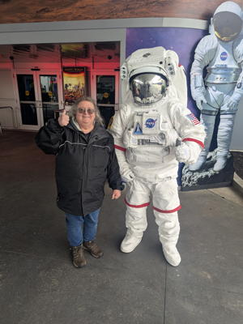
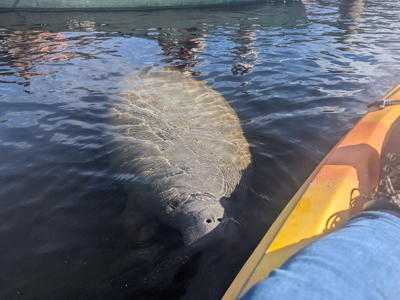
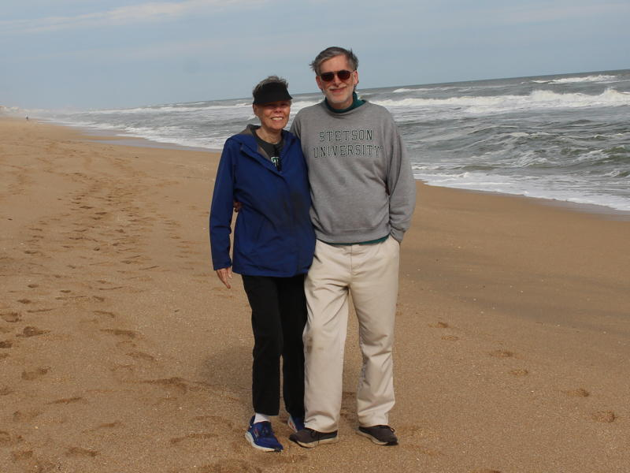

2025 Holiday Web Page

| Erich and Margie's 2025 Holiday Web Page | |
December We went to the beach on Christmas, as is our tradition. Erich won a free membership to chess.com for a month. Erich enjoyed listening to Bob's band. We celebrated New Year's Eve alone and fairly quietly, but did last until midnight.
January Erich got 4th in Bill & Judi's annual bocce tournament. Erich found out that Friedman numbers are being used by Jewish numerologists to pick out verses from the Torah to find the ultimate truth. We went to a happy hour at Adele and Jim's and got to throw axes. We celebrated the Chinese New Year at Missy's place. We got to see how bionic Margie has become.
Monet Erich's friend Monet visited from Oregon. We went to the space center, a bunch of art museums and the New Smyrna art festival, St. Augustine for a mixture of historical and musical adventures, and all the springs in the area for make-your-own pancakes, kayaking, and manatees. We also watched skydivers fall from the sky during lunch at the Perfect Spot, did a campus tour, and hosted a home trivia.
Barb and Peter Erich's oldest friend Barb and her fiancé Peter visited from Ireland. We couldn't do much due to Barb's ankle injury, but we visited some springs, saw skydivers, visited the Audubon Center for Birds of Prey, and had some fine meals.
February On a walk, Margie found an old woman wandering in our neighborhood, and brought her back home. Erich watched season 5 of "Star Trek - Lower Decks". We cleaned our garage, something we don't remember doing before.
March Our 44-year-old clothes dryer needed a new belt, but is still working. In contrast, our 10-year-old vacuum cleaner died, and we bought a new one. Erich got another stomach polyp removed. We had some ceiling stains painted. We attended Miguel's birthday party.
Sylvia Erich's German friend Sylvia visited. We visited a lot of parks, gardens, springs, beaches, and wildlife refuges, as well as the bird of prey center. The best sightings: green herons, roseate spoonbills, and an armadillo. We visited the Morse Museum, saw a rocket launch, went to a baseball game, held a trivia party, and Shannon was nice enough to give us a boat tour of Winter Park.
April Margie turned 74 with no fanfare. Erich had a tooth pulled, but he got to keep the old gold crown as a souvenir. Erich played backgammon with a new friend (who will remain nameless, but it wasn't Bill) and won 17-0. Margie saw an actual Easter bunny. Erich renewed his driver's license, and passed his vision test for the first time, so he can drive (legally) without glasses. The Brantons invited us out to see Dalton James, an amazing guitarist. Erich had cake for dinner on his birthday.
May We went to St. Augustine for the day to listen to Scott Halls, Baby Gray, the Dewey Via Band, and Shyla Macaluso. Margie fainted twice and spent a night in the hospital, but developed severe back pain as a result. She is feeling better now. Stetson baseball won their conference by losing their final game.
Monet Erich went to Eugene, Oregon to visit his friend Monet. We visited lots of falls, walked around several parks, drove down the coast, saw some live music (Sarah Adams), hosted a trivia party, visited a winery and distillery, went dancing under the influence of cocaine, and ate like royalty. We spent a day in Portland where we visited OMSI, shopped at Powell's, saw the Portlandia statue, and had Ghanaian food. I also spent a day with my high school girlfriend Liz, met her husband Randy, and saw her parents for the first time in 42 years.
June During my weekly backgammon session with Bill, I rolled 5-5, then he did, then I did, then he did. The chances of that happening are 0.00006%. We went to see Brian Smalley in Lake Mary. Erich had some peanut butter and cranberry sauce sandwiches.
July There are 4 women named Linda living in the 6 houses on the south side of Landsdowne. The probability of this is 0.000036%. Erich watched all 3 seasons of "Derry Girls", season 2 of "Star Trek - Prodigy", and the only season of "I am Not Okay with This". Erich made chai mix, but accidentally used garlic instead of ginger. Guen stopped by for lunch with her boyfriend, first time we'd seen her in 10 years. We went to St. Augustine to hear Bad Dog Mama. Erich saw a possum with babies on its back.
August Erich saw an armadillo on his walk. Erich watched Timo Väätäinen win the World Backgammon Championship, despite his name having 8 blots. We saw Bad Dog Mama in St. Augustine again. Erich started experiencing some neuropathy in his left hand, in addition to that in his left foot, which has been there for a decade. This issue hasn't been solved yet. Erich took charge of his backgammon meetup group. Erich watched the first 3 seasons of "Resident Alien".
September We relocated a coral snake out of our garage. We saw Brian Smalley play again in Winter Park. Erich got email from Tunisia for the first time.
October Erich watched seasons 1 and 2 of "Inside Job". We saw a deer on our way to the Branton's place. We spent an hour shepherding a lizard out of our bedroom. We played games with Missy, Barbara, and John. Erich played pickleball for the first time. Erich watched the first 3 seasons of "The Diplomat".
November Erich's puzzles were used in Taiwanese elementary schools to teach critical thinking. We went to the Deland art festival. We attended the annual Thanksgiving pot luck, hosted this year by Judy, and Erich won 2 of the 3 rounds of bocce. Erich watched the second season of "Man on the Inside". Erich gave a birthday card to his favorite McDonald's cashier.
Monet Erich's friend Monet visited again. We did lots of art museums and a railroad museum. We took the boat tour at Blue Springs (seeing a barred owl and a black-crowned night heron), and went to Leu Gardens (seeing a bunny and a hawk). We played backgammon with the meetup crowd twice, and several times in between, and played a new game Tablero that she bought me. We spent a day in St. Augustine, seeing both historical sites and many musicians. We also saw Brian Smalley perform in town, held a home trivia night, visited Cassadaga, and played bocce with Bill, Judi, Michael and Deborah.
December Erich did Vegetable December, eating a vegetable every single day. Margie took lots of pictures of neighborhood holiday displays. We saw Brian Smalley play in Winter Park again. Erich watched seasons 1-3 of "Sweet Tooth". Margie and Missy spent a morning at Lake Woodruff. We attended the Branton's solstice party, where Erich got 4th at trivia. Monet and Sylvia helped me with my family tree. As is our tradition, we went to the beach on Christmas, and it was 75 degrees. Later that day, Erich broke his office chair, and had to buy a new one. We look forward to Bill and Judi's bocce pot luck on New Year's Day.
Erich's holiday puzzles can be found here. You can see our archive of our previous holiday web pages here.
 
 



{kind=link}